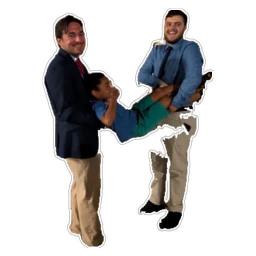

Domingo dia 27 de outubro
"Pois o homem que foge da sua chunguice é como quem tenta esconder o cheiro do perfume falso — quanto mais usa, mais revela." -1manel. 1:9. parte b
Mandem tocar o saxofone que o tema do texto diário aborda o amor numa relação conjugal.
O texto diário fala que um
🗣️ JOVEM 🔥 afim de se preparar para uma relação tem , entre muitos coisas enumeradas no texto diário, de cuidar com carinho do membros na nossa família e com os da congregação.
Nesse sentido o Marcos #1 E Daniel #1 estão numa aula prática, ao dividirem a parentalidade do mini Manel.
